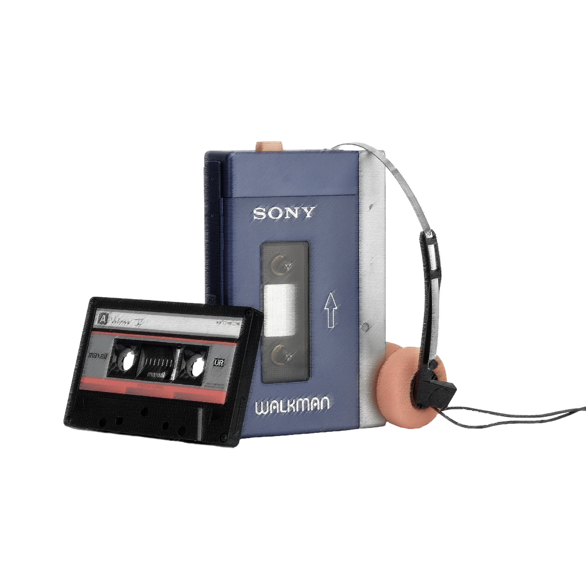
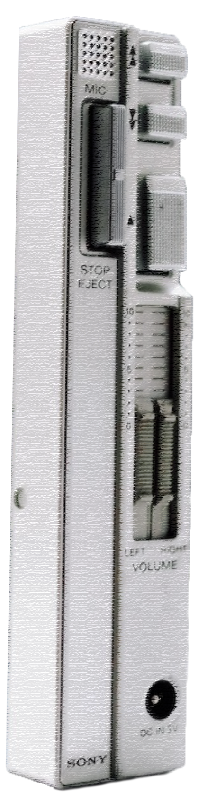
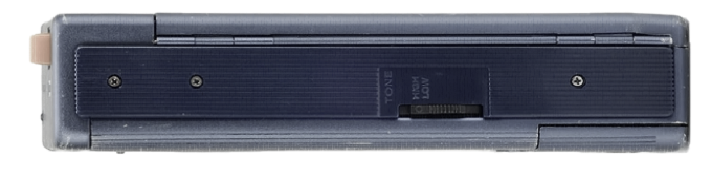

WALKMAN
AN INTERACTIVE MANUAL


HOTLINE BUTTON

This innovation of the “hot line” function is specifically individual to the TPS L2. The mechanical performance of the deck player was originally designed with speech and dictation in mind over music, pressing the orange button on the top of the machine—where fast play controls are located—reduces the sound of the cassette, which is replaced by the output of the microphone, meaning the listener can talk without stopping the tape.



BLUE
MDR-3L2 HEADPHONES
The TPS-L2 uses the basic case and mechanical parts of A cassette recorder. The personal cassette player concept eliminated the unnecessary; the contrasting design suits a fitment of a stereo tape head and the removal of not only the record circuitry, erase protection lever, speaker, erase head and tape counter. Disconnecting the recording circuit meant an absence of the microphone socket, though an internal microphone remains.




SILVER

VOLUME


